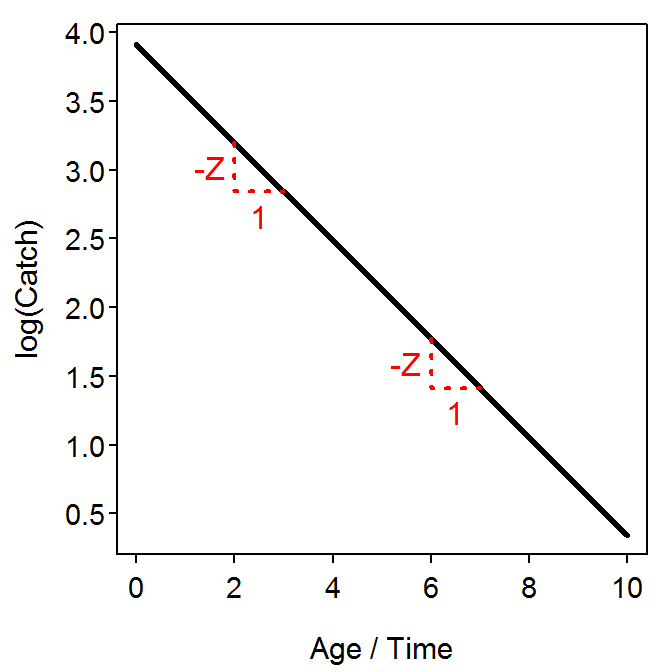
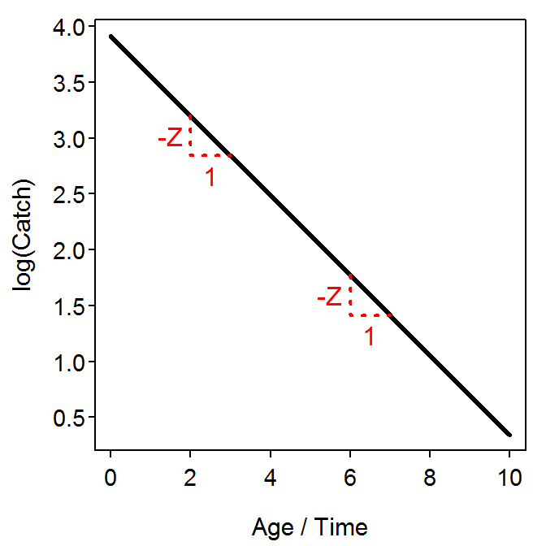
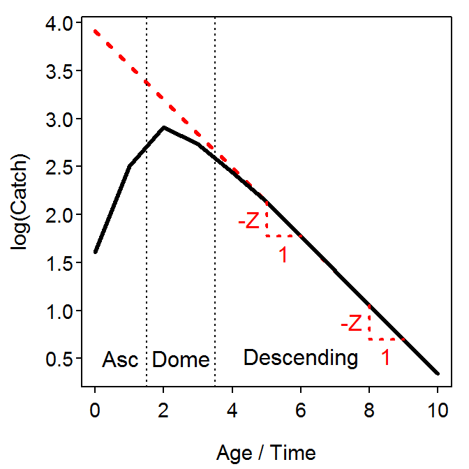
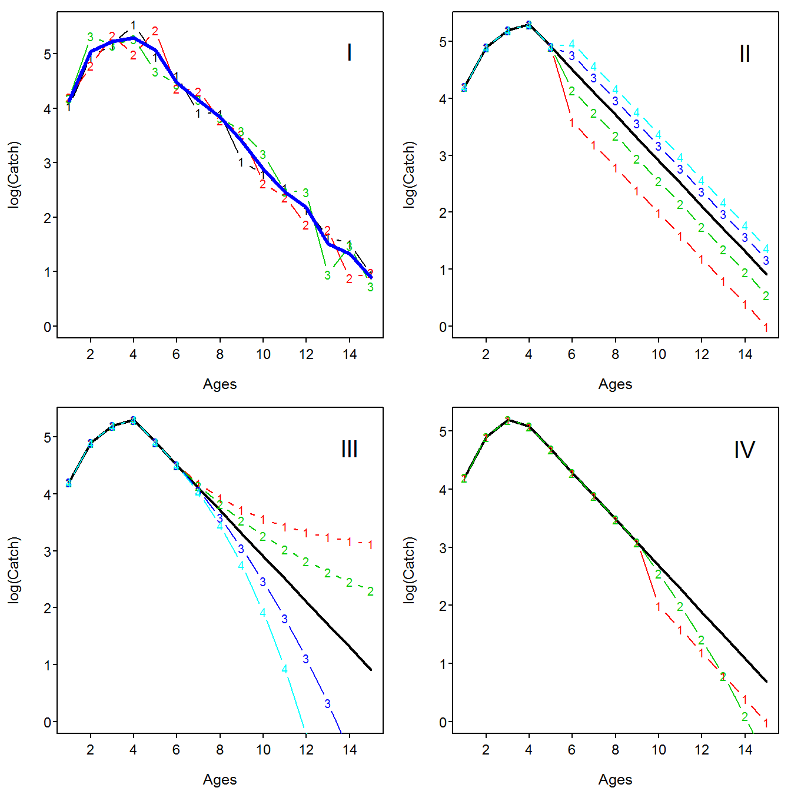

Mortality is a key component to understanding the population dynamics of fish species. Total mortality is often estimated from the sequential decline observed in cohorts of fish. The catch curve regression and Chapman-Robson methods used to analyze this decline are collectively called catch-curve methods and form the topic of these notes.
Data Requirements
In a population that is closed to emigration or immigration, the annual mortality rate (\(A\)) between two times is equal to the number of deaths during the time period divided by the population size at the start of the time period, or
\[ A = \frac{N_{t}-N_{t+1}}{N_{t}} = 1-\frac{N_{t+1}}{N_{t}} \]
Unfortunately, it is usually not possible to know the number of fish in a population. However, if the catch of fish (\(C\)) is proportional to the size of the population, i.e., \(C_{t}=vN_{t}\), then algebra quickly shows that
\[ A = \frac{C_{t}-C_{t+1}}{C_{t}} = 1-\frac{C_{t+1}}{C_{t}} \]
Thus, the mortality of a cohort of fish can be estimated from knowing the catches of fish at various times. In many fisheries, fisheries scientists “record time” by estimating the age of fish. Thus, the number of fish captured at varous ages, i.e., catch-at-age data, can be used to estimate mortality rates of fish populations.
In the statistical literature, longitudinal data is data that occurs when multiple samples are taken from the same group of individuals over time. The catches of fish from the same cohort over time is an example of longitudinal data. Longitudinal fisheries data takes many years to collect, which can be very costly and impart a long time-lag in management decisions.
Catch data from a single year across many cohorts of fish will be identical to longitudinal data of a single cohort if each cohort sampled began with the same number of fish (i.e., recruitment is constant) and if the mortality rate is constant across all ages and years. For example, the catches-at-age of the hypothetical 2002 and 2006 cohorts is shown on diagonals in Table 1 and are equal to the catch-at-age for fish in the 2009 capture year. The catch in a single year is called cross-sectional data because it “crosses” several cohorts of fish.
Table 1: The hypothetical catch of fish by age and capture year. The longitudinal catch of the 2002 and the partial 2006 year-classes of fish are shown by the two sets of diagonal cells highlighted in dark grey. The cross-sectional catch in the 2009 capture year is shown by the column of cells highlighted in light grey. All data were modeled with Equation 2 assuming that \(N_{0}=500\), \(Z=-log(0.7)\), and \(v=0.1\).
Catch Curve Regression Methods
Annual mortality can be estimated from catch data for two ages as shown above. However, fisheries scientists prefer estimates that are more synthetic, i.e., based on more ages. The two most common methods for computing synthetic estimates of mortality rates are the catch-curve regression and Chapman-Robson methods. The regression method is discussed in this section, whereas the Chapman-Robson method is discussed later.
Regression Model
The decline in individuals with age can be theoretically modeled with a modified continuous exponential population model. Because the population is closed with the exception of mortality, the instantaneous population growth rate parameter in the exponential population model is replaced with an instantaneous total mortality parameter (\(Z\)). Thus, the modified model is
\[ N_{t} = N_{0}e^{-Zt} \quad \quad \text{(1)} \]
where \(N_{t}\) is the population size at time \(t\) and \(N_{0}\) is the initial population size.
The catch of fish at age \(t\) is proportional to the number of fish of age \(t\), or \(C_{t}=vN_{t}\), as mentioned previously. This is rearranged to show that the relationship between population size and catch is \(N_{t}=\frac{C_{t}}{v}\) and substituted into Equation 1 to reveal
\[ \frac{C_{t}}{v} = N_{0}e^{-Zt} \quad \quad \text{ } \] \[ C_{t} = vN_{0}e^{-Zt} \quad \quad \text{(2)} \]
In contrast to Equation 1 the variables in Equation 2 (catch-at-age, \(C_{t}\), and age, \(t\)) are directly observable. The shape of Equation 2 (Figure 1-Left) follows the expected exponential decline. As is typical with exponential models, natural logarithms of both sides of Equation 2 yields
\[ log(C_{t}) = log(vN_{0})-Zt \quad \quad \text{(3)} \]
which is in the form of a linear equation with \(log(C_{t})\) on the y-axis and \(t\) on the x-axis (Figure 1-Right). Of great interest in Equation 3 is that the negative of the slope is \(Z\). Thus, the negative of the slope of the linear regression between \(log(C_{t})\) and \(t\) is an integrative measure of the instantaneous total mortality rate experienced by this cohort of fish over time.
 

Figure 1: Ideal plots of catch versus age (Left) and the natural log of catch versus age (Right) for a single cohort of fish. The right graph is called a longitudinal catch curve. The change in \(log(C_{t})\) for a unit change in \(t\) is emphasized on the catch curve to reinforce the idea that the slope of the idealized catch curve is \(Z\).
The Equation 1 can also be recast by assuming that catch-at-age (\(C_{t}\)) is proportionately related to the number-at-age and the amount of effort expended to catch those fish (i.e., \(E_{t}\)). Thus, \(C_{t}=qE_{t}N_{t}\), where \(q\) represents a constant proportion of the population captured by one unit of effort. This model can be rearranged to show that the relationship between population size and catch-per-unit-effort is \(N_{t}=\frac{1}{q}\frac{C_{t}}{E_{t}}\). This is substituted into Equation 1 and simplified to reveal
\[ \frac{1}{q}\frac{C_{t}}{E_{t}} = N_{0}e^{-Zt} \quad \quad \quad \quad \text{ } \]
\[ \frac{C_{t}}{E_{t}} = qN_{0}e^{-Zt} \quad \quad \text{(4)} \]
Again, the variables in Equation 4 (catch-per-unit-effort, \(\frac{C_{t}}{E_{t}}\), and age, \(t\)) are directly observable. Furthermore, natural logarithms of both sides of Equation 4 yields
\[ log(\frac{C_{t}}{E_{t}}) = log(qN_{0})-Zt \quad \quad \text{(5)} \]
which again is in the form of a linear equation with \(log(\frac{C_{t}}{E_{t}})\) on the y-axis and \(t\) on the x-axis. Thus, the negative of the slope of the regression between \(log(\frac{C_{t}}{E_{t}})\) and \(t\) is also an integrative measure of the instantaneous total mortality rate experienced by this cohort of fish over time. In other words, the y-axis variable can be either catch or catch-per-unit-effort data. The specifics of this regression methodology are discussed in .
Characteristics
All catch curves have three regions of interest: an ascending left limb, a domed middle portion, and a descending right limb Figure 2. The ascending left limb represents age-classes of fish that are not yet fully vulnerable to the gear used in the fishery. Fish in these age-classes are said to have “not fully recruited to the fishery.” The catches of fish in these age-classes are not useful for estimating the total mortality rate.

Figure 2: Idealized catch curve (plot of the natural log of catch versus age) illustrating the ascending, domed, and descending portions. The red dotted line represents the idealized catch curve if all age-classes were fully recruited to the fishery.
The domed portion of the catch-curve generally consists of age-classes of fish that are nearly, but not completely, recruited to the fishery. The relative width of the domed portion provides some insight into the rate of recruitment. For example, a very sharply pointed dome indicates that the fish recruit rather “quickly.” In contrast, a relatively rounded dome shows that fish recruit to the exploited phase of the population more slowly, perhaps requiring several years before the mean size of fish in that year-class is sufficiently large to ensure capture upon encounter with the gear. Fish in age-classes in the domed portion of the catch curve are also excluded from use when estimating \(Z\). Despite the exclusion of age-classes in the ascending limb and domed portion of the catch curve it is, however, imperative to have some animals from these age-classes in your sample, so that you can identify the important descending limb of the catch curve.
The descending left limb of the catch curve represents the regular decline of fully-recruited individuals in the fishery. Thus, \(Z\) can be estimated by applying the concept of Equation 3 to the catches of fish in the ages corresponding only to the descending portion of the catch curve. There is some debate about how the descending limb is defined in practice. Additionally, the portion of the descending limb corresponding to the older ages is often poorly represented in the catch data because these individuals are relatively rare. At times, some catch data for older ages may be ignored. Specific guidelines for identifying the start of the descending limb and which, if any, older ages should be excluded will be given in and .
Assumptions
As with any model, the analysis of catch curves for estimating instantaneous total mortality rate depends on a series of assumptions being met. The regression method using longitudinal and cross-sectional data share the following assumptions:
- “Closed Population” – there is no immigration or emigration to the population.
- “Constant Mortality” – The instantaneous total mortality rate is independent of age and year (i.e., constant) for ages on the descending limb of the catch curve.
- “Constant Vulnerability” – The vulnerability (if catch data is used) and catchability (if CPUE data is used) of the fish to the fishery, for ages on the descending limb of the catch curve, is independent of age and year (i.e., constant).
- “Unbiased Sample” – The sample is not biased regarding any specific age-group(s).
The longitudinal method has the following additional assumption,
- “Accurate Ages” – The fish in a sample can be accurately assigned an age. In longitudinal data, this means that you can follow a cohort through time.
Additionally, if cross-sectional data is being used then it is assumed that there is constant recruitment, i.e., the initial number of individuals is the same for each cohort of fish.
Violations of these assumptions often lead to catch curves that are “bumpy”, convex, concave, or offset rather than linear in the right descending limb Figure 3.

Figure 3: Simulated catch curves to illustrate shapes when assumptions are violated. Each simulation (i.e., plot), unless otherwise, noted uses \(N_{0}=1000\) for each year-class, \(Z=0.40\), and incomplete recruitment until age-4 and then constant recruitment for subsequent ages. In simulation I, a coefficient of variation for \(N_{0}\) of 0.3 was used. In simulation II, constant multipliers of change in recruitment of 0.4, 0.7, 1.3, and 1.6 were applied at age-6. In simulation III, geometric multipliers of \(Z\) by age of 0.8, 0.9, 1.1, and 1.2 were applied at age-6. In simulation IV, the vulnerability of age-10 and older fish was cut in half (in run 1) and decreased by 0.1 for each age (in run 2). In each plot, the catch curve with no assumption violations is shown as a solid black line. In simulation I, the average of the three runs is shown as a solid blue line.
Instantaneous vs. Annual Mortality Rates
The instantaneous mortality rate (\(Z\)) that is estimated via the catch curve method is a measure of (i) how much the natural log of number of individuals declines annually or (ii) how much the actual number of individuals declines in an imperceptibly short period of time (i.e., in an “instant”). The instantaneous mortality rate has some very useful mathematical properties, but providing a practical interpretation of its meaning is difficult – e.g., what does it mean if the log number of individuals declines by 0.693 or if the population changes by 0.693 in a “millisecond” of time? Fortunately, the instantanous mortality rate can be easily converted to an annual mortality rate (\(A\)), the proportion of the population that suffers mortality in a given year, with
\[ A = 1-e^{-Z} \]
Thus, a \(Z\) of 0.693 corresponds to an \(A\) of \(1-e^{-0.693}\) or 0.500. Thus, this largely uninterpretable value of \(Z\) corresponds to an annual mortality rate of 50.0%. In other words, an average of 50.0% of the population dies on an annual basis.
Which Ages?
Smith et al. (2012), in a simulation study, suggested that the first age to be included on the descending limb is the age where the peak catch occurred (in contrast to one year after the peak catch). Chapman and Robson (1960) proposed that the regression methods should exclude all age-classes above the age where the catches fall below five individuals. Dunn et al. (2002) considered a modification of this suggestion where the cutoff catch value is one individual. In their analyses, Dunn et al. (2002) found that their modified suggestion generally performed better than the regression using all available age-classes, but that the suggestion of Chapman and Robson (1960) actually performed worse. Smith et al. (2012), however, showed that the weighted regression method was less biased than the unweighted regression method no matter what decision rule was used for the oldest age in the analysis. Thus, if the regression method is used it is suggested that a weighted regression that uses all age-classes older than and including the age with the maximum catch should be used.
Chapman-Robson Method
Background
Chapman and Robson (1960) (and Robson and Chapman (1961)) provided an alternative method for estimating the total annual survival rate (\(S\)), and thus the annual (\(A\)) and instantaneous (\(Z\)) total mortality rates, from catch curve data. Their method was based on understanding that the catches at each age on the descending limb of the catch curve followed a geometric probability distribution and using this to derive a maximum likelihood estimator for the survival parameter of the distribution. Their method, called the Chapman-Robson method, is outlined below.
The Chapman-Robson estimate of the annual survival rate is
\[ \hat{S} = \frac{T}{n+T-1} = \frac{\bar{T}}{1+\bar{T}-\frac{1}{n}} \quad \quad \text{(6)} \]
where \(n\) is the total number of fish observed on the descending limb of the catch curve, \(T\) is the total recoded age of fish on the descending limb of the catch curve, and \(\bar{T}\) is the mean recoded age of fish on the descending limb of the catch curve (i.e., \(\bar{T}=\frac{T}{n}\)). It should be noted that the ages are “recoded” such that the first fully-recruited age on the descending limb of the catch-curve is set to 0. The total recoded age is calculated as a weighted sum of the recoded ages where the weights are the catches at each age. The standard error of this estimate is
\[ SE_{\hat{S}} = \sqrt{\frac{T}{n+T-1}\left(\frac{T}{n+T-1}-\frac{T-1}{n+T-2}\right)} = \sqrt{\hat{S}\left(\hat{S}-\frac{T-1}{n+T-2}\right)} \quad \quad \text{(7)} \]
If \(n\) is large, as it often is in fisheries catch data, then \(SE_{\hat{S}}\) can be estimated by
\[ SE_{\hat{S}} = \sqrt{\frac{\hat{S}(1-\hat{S})^{2}}{n}} \quad \quad \text{(8)} \]
The Chapman-Robson estimate of \(S\) can be transformed into an estimate of \(Z\) through the relationship \(S=e^{-Z}\), i.e., \(\hat{Z} = -log(\hat{S})\) with a large sample approximation of \(SE_{\hat{Z}}\) (Jensen 1985) as
\[ SE_{\hat{Z}} = \frac{SE_{\hat{S}}}{\hat{S}} \quad \quad \text{(9)} \]
Hoenig et al. (1983), however, have shown that these estimates are slightly biased and that an unbiased estimate of \(Z\) is obtained with
\[ \hat{Z} = -log(\hat{S}) - \frac{(n-1)(n-2)}{n(T+1)(N+T-1)} \quad \quad \text{(10)} \]
with the large sample approximation of \(SE_{\hat{Z}}\) as
\[ SE_{\hat{Z}} = \frac{1-e^{-\hat{Z}}}{\sqrt{ne^{-\hat{Z}}}} \quad \quad \text{(11)} \]
These calculations are illustrated below with the Tobin Harbor Brook Trout (assuming that the fish were fully recruited to the fyke nets at age-2). The original data were modified for calculation of the Chapman-Robson estimator of \(S\) as shown in Table 2. From that, it is seen that \(n=235\) and \(T=229\). Thus,
\[ \hat{S} = \frac{229}{235+229-1} = 0.4946004 \]
\[ SE_{\hat{S}} = \sqrt{0.4946004\left(0.4946004-\frac{229-1}{235+229-2}\right)} = 0.02326041 \]
An approximate 95% confidence interval for \(S\) is \(0.4946\pm1.96(0.0233)\) or (0.4490,0.5402). Furthermore,
\[ \hat{Z} = -log(0.4946004) - \frac{(235-1)(235-2)}{235(229+1)(235+229-1)} = 0.7018264 \]
\[ SE_{\hat{Z}} = \frac{1-e^{-0.7018264}}{\sqrt{235*e^{-0.7018264}}} = 0.04672751 \]
An approximate 95% confidence interval for \(Z\) is \(0.7018\pm1.96(0.0467)\) or (0.6102,0.7934).
Table 2: Cross-sectional total catch-at-age of Tobin Harbor Brook Trout in fyke nets, 1996-1998, modified to illustrate the calculations of the Chapman-Robson method.
Which Ages?
Smith et al. (2012) suggest that the Chapman-Robson method should use all ages after the age where the peak catch occurred (i.e., all ages beginning with the first age after the age with the peak catch).
Catch Curve vs Chapman-Robson
Dunn et al. (2002) provided an excellent review of past examinations of the regression and Chapman-Robson methods and their own examination of the precision and bias properties of these two methods in the face of stochastic errors related to \(Z\), number of fish at time of recruitment to the fishery, sampling, and ageing. Overall, they found that the Chapman-Robson estimator was most precise and least biased; however, the advantage over the regression method declined somewhat with increasing amounts of stochastic error and increasing values of \(Z\).
The work of Dunn et al. (2002) also showed that, in the face of only stochastic sampling variability, the Chapman-Robson estimator was very slightly positively biased, primarily for larger values of \(Z\), but only on the order of approximately 2-3%. In contrast, the regression estimator had a strong negative bias on the order of 20%. The modified (excluding all age-classes beyond where one or fewer individuals were observed) regression estimator had a negative bias on the order of 2-5% with the larger values occurring when \(Z\) was larger. These results suggest that estimates of \(Z\) with the regression method may be serious underestimates.
Smith et al. (2012) provided another study of precision between the regression and Chapman-Robson methods with the addition of consideration of different definitions of the descending limb of the catch curve. They found that the Chapman-Robson method using all ages after the age with the peak catch and the weighted regression using all ages after and including the age with the peak catch performed similarly. However, they suggest using the Chapman-Robson method because it is based on a statistical foundation and has a generally smaller variance, whereas the weighting procedure in the regression method is ad hoc. Finally, Smith et al. (2012) conclude that the unweighted regression should not be used.
Finally, other methods for estimating total mortality rates have been proposed (e.g., Heincke (1913), Jackson (1939), Ssentengono and Larkin (1973)). However, various studies (including Smith et al. (2012)) have shown that these methods perform less well than the Chapman-Robson and regression methods described here.
Which Ages?
Smith et al. (2012) suggest that the Chapman-Robson method should use all ages after the age where the peak catch occurred (i.e., all ages beginning with the first age after the age with the peak catch).
Catch Curve vs Chapman-Robson
Dunn et al. (2002) provided an excellent review of past examinations of the regression and Chapman-Robson methods and their own examination of the precision and bias properties of these two methods in the face of stochastic errors related to \(Z\), number of fish at time of recruitment to the fishery, sampling, and ageing. Overall, they found that the Chapman-Robson estimator was most precise and least biased; however, the advantage over the regression method declined somewhat with increasing amounts of stochastic error and increasing values of \(Z\).
The work of Dunn et al. (2002) also showed that, in the face of only stochastic sampling variability, the Chapman-Robson estimator was very slightly positively biased, primarily for larger values of \(Z\), but only on the order of approximately 2-3%. In contrast, the regression estimator had a strong negative bias on the order of 20%. The modified (excluding all age-classes beyond where one or fewer individuals were observed) regression estimator had a negative bias on the order of 2-5% with the larger values occurring when \(Z\) was larger. These results suggest that estimates of \(Z\) with the regression method may be serious underestimates.
Smith et al. (2012) provided another study of precision between the regression and Chapman-Robson methods with the addition of consideration of different definitions of the descending limb of the catch curve. They found that the Chapman-Robson method using all ages after the age with the peak catch and the weighted regression using all ages after and including the age with the peak catch performed similarly. However, they suggest using the Chapman-Robson method because it is based on a statistical foundation and has a generally smaller variance, whereas the weighting procedure in the regression method is ad hoc. Finally, Smith et al. (2012) conclude that the unweighted regression should not be used.
Finally, other methods for estimating total mortality rates have been proposed (e.g., Heincke (1913), Jackson (1939), Ssentengono and Larkin (1973)). However, various studies (including Smith et al. (2012)) have shown that these methods perform less well than the Chapman-Robson and regression methods described here.